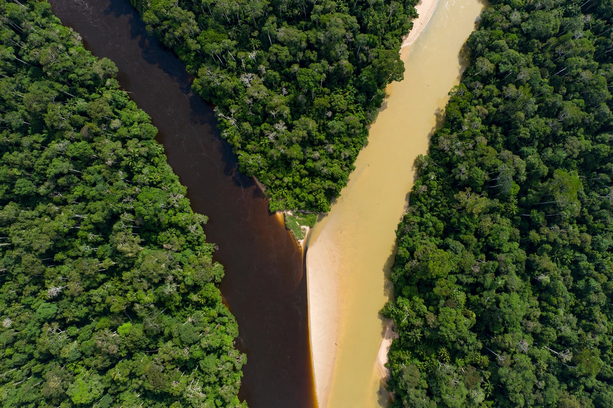

This article is about the Amazon tributary. For other uses, see Río Negro (disambiguation).
| Rio Negro | |
|---|---|
| Native name | Rio Negro (Portuguese) |
| Location | Colombia, Venezuela, Brazil |
| Source | Guainía highlands, Colombia |
| Mouth | Amazon River at Manaus |
| Length | 2,250 km (1,400 mi) |
| Basin size | 691,000 km² |
| Discharge | ~28,400 m³/s average |
The Rio Negro (Portuguese: Rio Negro [ˈʁi.u ˈneɡɾu]; Spanish: Río Negro [ˈri.o ˈneɣɾo]) is the largest left tributary of the Amazon River. It is the largest blackwater river in the world, and one of the ten largest rivers in the world by average discharge. It drains about 691,000 km² across Colombia, Venezuela and Brazil, and meets the Amazon at Manaus in the celebrated Meeting of Waters, where its dark waters run side by side with the sandy Solimões without mixing for several kilometres.

The river rises as the Guainía River in the highlands of eastern Colombia, flows east and then southeast along the Colombian–Venezuelan border, where it receives the Casiquiare canal — a natural channel that links the Rio Negro with the Orinoco River, one of the few natural inter-basin waterways in the world. In Brazil it flows generally southeast past São Gabriel da Cachoeira and Barcelos before reaching Manaus, where it joins the Solimões to form the Amazon proper.
The Rio Negro is a classic blackwater river: its waters are stained the colour of weak tea by humic and fulvic acids leached from flooded forest soils, giving it very low nutrient content, high acidity (pH around 3.8–4.9) and remarkable clarity. Its average discharge of roughly 28,400 m³/s is greater than that of the Congo River's tributaries combined; during the flood season the river can rise more than 10 metres and spread up to 30 km wide among its archipelagos, including the Anavilhanas, one of the largest river archipelagos on Earth.
Despite its nutrient-poor water, the basin supports exceptional biodiversity in its flooded forests (igapó), including the pink river dolphin (boto), giant otter, black caiman and hundreds of fish species adapted to acidic blackwater, many of them popular in the aquarium trade, such as the cardinal tetra.
The river was named by Spanish explorers for the striking darkness of its water. It was explored by Europeans from the 17th century onward and later surveyed by naturalists including Alexander von Humboldt, who proved the existence of the Casiquiare canal in 1800, and Alfred Russel Wallace, who travelled the river in the early 1850s.